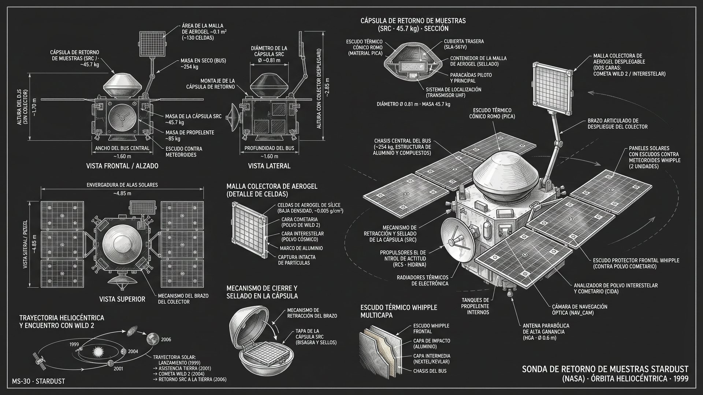

Stardust

Trajo a la Tierra, por primera vez, polvo de un cometa: más de diez mil partículas atrapadas en una espuma casi tan ligera como el aire. Entre ellas había glicina.
Última transmisión el 24 de marzo de 2011, tras un encendido final de 146 segundos que agotó el propelente, recibida a 312 millones de km de la Tierra. La nave quedó sin control en órbita heliocéntrica; la cápsula estaba en Houston desde 2006. Personas: Don Brownlee, Tim Larson, Eileen Stansbery, Jamie Elsila
Lo que hizo
- Mi encargo — Ir al cometa Wild 2, recoger polvo de su estela y traerlo a la Tierra en una cápsula. Se lanzó el 7 de febrero de 1999 desde Cabo Cañaveral.
- Granos en el aerogel — El 2 de enero de 2004 pasé a unos 250 kilómetros del núcleo y atrapé más de 10.000 partículas mayores de un micrómetro. El 15 de enero de 2006 la cápsula aterrizó en Utah a las 10:10 UTC.
- Volver a un cometa — El 15 de febrero de 2011 pasé a 181 kilómetros del cometa Tempel 1, la primera vez que se revisita uno de estos cuerpos. El 24 de marzo, un encendido final de 146 segundos cerró la misión.
Modelo 3D, chat y cómic, en tres idiomas
Fuentes
- science.nasa.gov/mission/stardust/
- www.jpl.nasa.gov/news/nasas-venerable-comet-hunter-wraps-up-mission/
- jpl.nasa.gov/news/nasas-stardust-sample-return-was-10-years-ago-today
Ver el índice completo · Proyecto del NASA Space Apps Challenge 2026. Contenido con fuentes citadas.